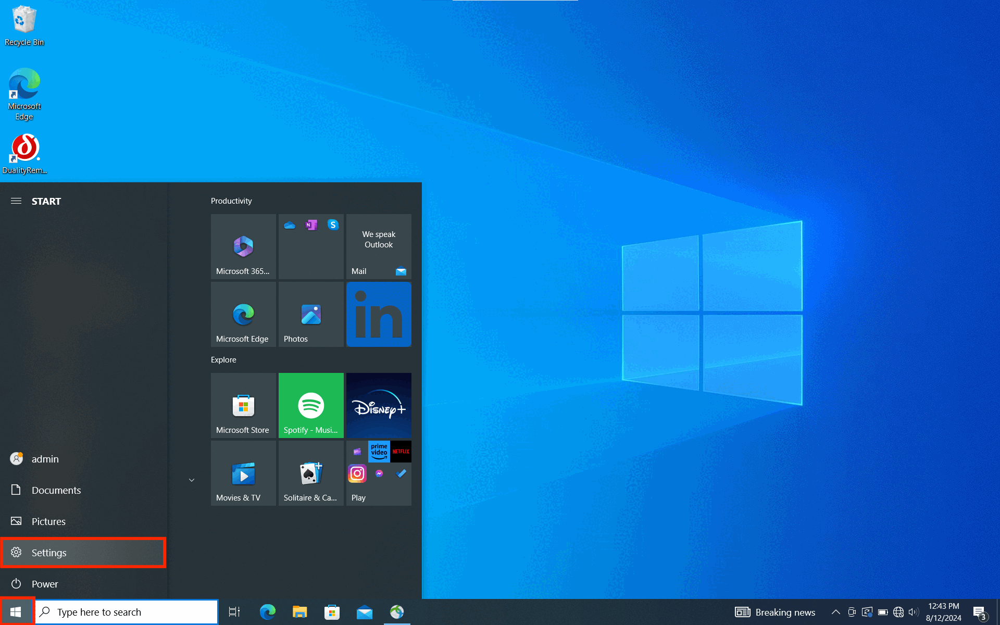

Room 305
Sound Setup
Room PC

RACK
- On the top of the rack, there is a black box labeled Furman. Flip the red switch up and turn on the power.
- On the second box in the rack labelled "Audio Control", press the button labelled "Cart".
- Make sure the "Bass", "Treble" and "Balance" button are set to the 12 'o' clock position. Adjust the volume button as needed.
- On the podium computer, in the menu bar in the top right corner, under sound, ensure that "SSL 2+" is the selected device (it will be highlighted blue).
- Turn the grey knob in the top right corner of the SSL all the way to the right towards "USB".
- Once you're done using the PC, Turn the Monitor Level knob all the way to 0 and switch off the Furman Power in the rack.
TV Monitor
- Aim the remote labeled Samsung remote in the room at the TV and press the power button to turn it on.
- On the remote, click the "Home" button and select HDMI 1
- Once you are done, turn the TV off with the remote.
Laptop
Aux Cable (No video)
- On the top of the rack, there is a black box labeled Furman. Flip the red switch up and turn on the power.
- Plug the aux cable on the rack into your computer or device.
- On the second box in the rack labelled "Audio Control", press the button labelled "Device".
- Make sure the "Bass", "Treble" and "Balance" button are set to the 12 'o' clock position. Adjust the volume button as needed.
- On the bottom box in the rack, make sure sure the knobs for left and right are turned to the vertical/ 12 'o' clock position
- On your computer, in the menu bar in the top right corner, under sound, ensure that "External Headphones" is the selected device (it will be highlighted blue).
- Once you're done using your computer, press the "Cart" button on the "Audio Control" box before unplugging the aux cord, and switch off the Furman Power in the rack.
HDMI (With Video)
- In case you would like to project video from your laptop onto the wall-mounted TV, you can use the HDMI cable to do so. However, you would only be able to play the sound through the TV speakers and not the room speakers
- Attach the cable to your laptop and turn on the TV. In case the video is not projected by default, select HDMI 2 as the input.
- Make sure SAMSUNG is selected as the playback device in your sound settings on your computer: For Mac: option available in top right corner on the toolbar For Windows: option available in the bottom right corner.
Display Settings

- In order to change display settings, open system preferences (in the dock at the bottom of the screen), click on displays, then select the arrangement tab.
- If you would like to mirror the displays (such that the screen on the cart and on the wall are the same) make sure the box is checked. If you would like to extend the displays (such that the two screens are separate), make sure the box is unchecked. The blue box with the white tab on the top represents the computer monitor while the other box represents the room's screen. You can move around this second box to determine where the second screen exists in relation to the computer monitor. Eg: if set to be on the left of the blue box with the white bar, you would be able to move your mouse all the way to left of your monitor and onto the screen at the front of the room.

- First ensure Headphones is selected as the playback device in the sound settings (bottom left corner of the toolbar
- Click the Windows icon on the bottom left corner, open 'Settings' and Click on 'System'
- Click on 'Display' and scroll down to 'Multiple Displays' setting.
- If you would like to mirror the displays (such that the screen on the podium and on the wall are the same) make sure to select 'Duplicate these displays'
- If you would like to extend the displays (such that the two screens are separate), select 'Extend these displays' You can adjust how both screens related to each other in the 'Rearrange your displays' section when scrool back to the top of the page.